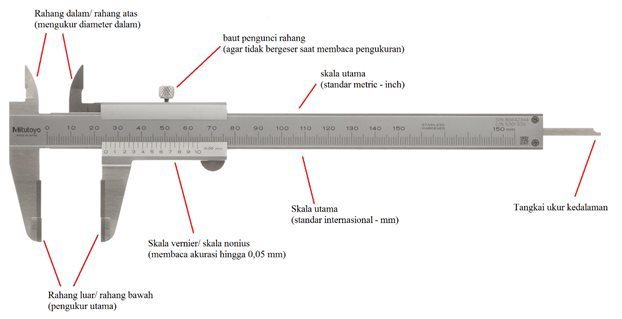
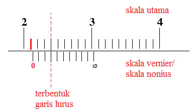

Avicenna's Bimbingan Belajar - Fisika
Bimbel Kami menyediakan banyak sekali tenaga pengajar yang ahli di dalam pengajaran mapel Fisika.
Dibawah ini kami lampirkan salah satu materi Fisika dari tingkat pendidikan SMA Kelas X, materi yang disajikan adalah Jangka Sorong.
Jangka Sorong
Jangka sorong adalah alat ukur yang mampu mengukur jarak, kedalaman, maupun 'diameter dalam' suatu objek dengan tingkat akurasi dan presisi yang sangat baik (kurang lebih 0,05 mm). Hasil pengukuran dari ketiga fungsi alat tersebut dibaca dengan cara yang sama.Alat ini dipakai secara luas pada berbagai bidang industri enjiniring (teknik), mulai dari proses desain/perancangan, manufaktur/pembuatan, hingga pengecekan akhir produk. Alat ini dipakai luas karena memiliki tingkat akurasi dan presisi yang cukup tinggi, mudah digunakan, mudah dibawa-bawa, dan tidak membutuhkan perawatan khusus. Karena alasan inilah jangka sorong lebih disukai insinyur (enjinir) dibandingkan alat ukur konvensional seperti penggaris.
Bagian - bagian Jangka Sorong
Bagian-bagian jangka sorong terdiri dari skala baca yang tercetak pada badan alat ini (sama seperti skala baca/angka-angka di penggaris) yang dapat diatur berdasarkan letak 'rahang' jangka sorong; terdapat dua pasang rahang, yakni sepasang rahang luar (atau rahang bawah) untuk mengukur jarak (pengukur utama) dan sepasang rahang dalam (atau rahang atas) untuk mengukur 'diameter dalam' (contohnya mengukur diameter dalam pada cincin). Kedua pasang rahang tersebut dapat digerakkan untuk pengukuran, jarak antar rahang untuk kedua pasang rahang tersebut dapat dibaca dengan cara yang sama. Selain itu pula, terdapat tangkai ukur kedalaman yang pergerakannya diatur dengan cara menggerakkan rahang. Karena ketiga bagian-bagian jangka sorong tersebut saling bergerak bersamaan, maka ketiga fungsi tersebut pengukurannya dibaca/dihitung dengan cara yang sama. Untuk lebih jelasnya, bagian-bagian jangka sorong dapat dilihat pada gambar dibawah ini:
Cara Membaca Jangka Sorong

Perhatikan hasil pengukuran diatas. Cara membaca jangka sorong untuk melihat hasil pengukurannya hanya dibutuhkan dua langkah pembacaan:
1. Membaca skala utama: Lihat gambar diatas, 21 mm atau 2,1 cm (garis merah) merupakan angka yang paling dekat dengan garis nol pada skala vernier persis di sebelah kanannya. Jadi, skala utama yang terukur adalah 21mm atau 2,1 cm.
2. Membaca skal vernier: Lihat gambar diatas dengan seksama, terdapat satu garis skala utama yang yang tepat bertemu dengan satu garis pada skala vernier. Pada gambar diatas, garis lurus tersebut merupakan angka 3 pada skala vernier. Jadi, skala vernier yang terukur adalah 0,3 mm atau 0,03 cm.
Untuk mendapatkan hasil pengukuran akhir, tambahkan kedua nilai pengukuran diatas. Sehingga hasil pengukuran diatas sebesar 21 mm + 0,3 mm = 21,3 mm atau 2,13 cm.